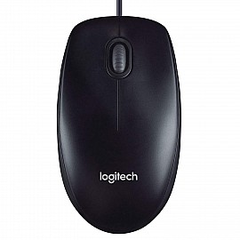

Mouse

A mouse is an input device that allows users to interact with a computer by controlling the pointer on the screen. It typically consists of two buttons and a scroll wheel, though more advanced versions may include additional buttons and features. Modern mice often come with wireless connectivity, customizable buttons, and adjustable sensitivity (DPI) to suit different tasks like gaming, designing, or general use.
History of the Mouse
The mouse was invented by Douglas Engelbart in 1964. It was initially a wooden device with two wheels, but it evolved into the modern optical and wireless versions that we use today. The mouse became widely popular in the 1980s, coinciding with the growth of personal computing. Today, mice are available in various designs, including ergonomic shapes and gaming-specific models, making them more versatile and user-friendly.
How Mice Work
Modern mice use either optical or laser sensors to detect movement. The sensor sends information to the computer about the mouse’s position, which then moves the on-screen pointer accordingly. A typical mouse has buttons to select items, open files, and perform other functions. Some mice also have additional buttons for extra functionalities, like backward/forward navigation or zooming. Advanced mice now include features like gesture controls, touch-sensitive surfaces, and even rechargeable batteries for convenience.
Types of Mice
- Wired Mouse: This type of mouse connects directly to the computer via a USB or PS/2 port. It offers a reliable connection with no need for batteries. Modern wired mice often come with braided cables for durability.
- Wireless Mouse: These mice use wireless technology like Bluetooth or radio frequency (RF) to connect to the computer, offering greater freedom of movement but requiring batteries. Many wireless mice now feature rechargeable batteries and fast-charging options.
- Optical Mouse: Optical mice use an LED light to detect movement on a surface. They are more accurate and reliable than older mechanical mice, which used a ball to track movement. Optical mice are now standard for most users.
- Laser Mouse: Laser mice use laser light to detect movement, providing greater precision and performance compared to optical mice. They work on more surfaces and are often used for gaming and professional work. Some models even allow DPI adjustments for better control.
- Trackball Mouse: Trackball mice have a ball on top that you rotate with your fingers or palm to move the pointer. They are often preferred in specialized industries or by users with limited desk space. Modern trackball mice are designed for better ergonomics and precision.
- Ergonomic Mouse: Ergonomic mice are designed to reduce strain on the wrist and hand, helping to prevent repetitive stress injuries (RSI) for people who use the computer extensively. They now come in vertical designs and customizable shapes for better comfort.
Advantages of Mice
- Precision and Control: Mice provide precise control of the on-screen pointer, making them ideal for tasks like graphic design, gaming, and navigation. Modern mice offer adjustable DPI settings for even greater precision.
- Ergonomics: Many mice are designed with ergonomics in mind, ensuring comfort for extended use without causing strain or discomfort. Some models include wrist rests or vertical designs for better posture.
- Versatility: Mice can be used for a wide variety of tasks, from everyday computer navigation to specialized work like video editing and gaming. Advanced mice now include programmable buttons for added functionality.
Disadvantages of Mice
- Space Requirement: Mice require a flat surface to function properly, so they may not be as suitable in environments with limited space. However, compact and portable mice are now available for travel use.
- Battery Life (Wireless Mice): Wireless mice require batteries, and frequent use can lead to the need for regular battery replacements or charging. Modern wireless mice often include rechargeable batteries with long life spans.
- Precision Loss on Dirty Surfaces: Optical and laser mice can lose precision if used on reflective or dirty surfaces, which can disrupt productivity. Using a mouse pad or cleaning the surface can help mitigate this issue.
Applications of Mice
- Professional Use: Mice are essential for tasks like graphic design, video editing, programming, and general office work. Specialized mice with extra buttons and features are available for these tasks.
- Gaming: High-precision mice with customizable buttons and DPI settings are designed specifically for gaming, offering faster response times and improved control. Gaming mice often include RGB lighting and ergonomic designs.
- Entertainment: Mice are used for navigation in entertainment systems, web browsing, and media consumption. Some modern mice even support gesture controls for easier navigation.
Popular Mouse Brands
- Logitech: Known for producing a wide range of mice for all purposes, from basic models to advanced gaming mice. Logitech also offers ergonomic and productivity-focused mice.
- Razer: Razer specializes in high-performance gaming mice with customizable buttons, RGB lighting, and adjustable DPI settings. Their mice are popular among professional gamers.
- Microsoft: Microsoft offers ergonomic and reliable mice that are ideal for office and professional use. Their Surface series mice are sleek and portable.
- SteelSeries: SteelSeries is popular among gamers for their mice that provide fast response times, precision, and durability. They also offer customizable software for advanced settings.
Conclusion
The mouse is one of the most essential input devices for computer users. From basic office tasks to high-end gaming, there is a mouse designed for every purpose. With technological advancements in sensors, ergonomics, and wireless capabilities, mice continue to evolve to meet the demands of modern computing. Whether you need a simple device for everyday use or a high-performance tool for gaming or professional work, there is a mouse to suit your needs.